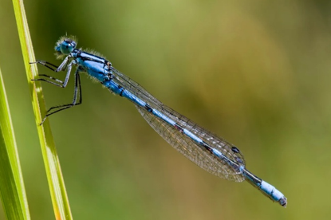

Es un insecto odonato de cuerpo delgado y alargado, generalmente de color azul con marcas negras en los machos, mientras que las hembras pueden presentar tonalidades verdosas o azuladas. Posee dos pares de alas transparentes y ojos prominentes. Habita principalmente cerca de lagos, estanques y otros cuerpos de agua tranquila. Tanto sus larvas como los adultos son depredadores de pequeños invertebrados acuáticos y terrestres.